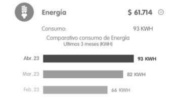
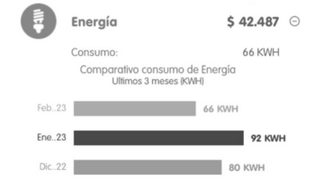

By: Yadharis Perdomo Urrego
Linear regression: kWh vs Month
This second part of the project must be done individual. For each plot, you
must show evidence about your bill house public services to proof that your
information is true.


About the observed behavior
According to the collected data from the plot, explain why the graphic
displays that behavior in terms of:
- The increasement and decreasement of the regression:
The increase and decrease of the regression is estimated according to the equation y = 1.60x + 77.80, since 1.60 > 0. Then, we can say that the graph presents an increasing slope. Now by replacing the variable x by a specific month, which in this case was expressed in the form 1,2,3,4,5 we see that an increasing number of differences of 1.6 is obtained in relation with the previous one.
- The relation among the dots regarding the colors:
The relationship between the linear regression and the true consumption, although it is not very close, the straight line tries to follow that trend of having the closest approach to the points, which, although not precise, gives an approximate value
-
Estimate how many energy you will consume in the next month. Use LaTeX
syntax in order to compute that:
As I said before, if we use the equation y = 1.60x + 77.80, but in this case we replace the x by 6, we obtain that y = 1.60*6 + 77.80 and this is equal to 87.4, it means that in the month of mayonnaise, it is estimated that 87.4 KWH will be consumed
-
A conclusion about your own interpretation on how you should reduce or
remain stable the consumption of electric energy:
My interpretation about reducing or keeping energy consumption stable, is for example to take a preferred data, try to use the lowest, which in this case is February with 66 KWH, and then transmit it in the coming months or until that rate decrease, then in reality it goes related with the responsibility of each household and the consumption of electrical energy.
Linear regression: Residents vs kWh
About the observed behavior
According to the collected data from the plot, explain why the graphic
displays that behavior in terms of:
- The increasement and decreasement of the regression:
In this case the equation is y = 97.17x - 221.45 that presents a positive slope as seen in the previous case since 97.17 > 0. When replacing x with any other natural number, it will be observed that as the number increases, also increases the estimate of KWH consumed.
- The relation among the dots regarding the colors:The relationship that is evident is that in some cases, the linear regression becomes very close to the estimated value such as people who present 3, 4 and 5 residents in their homes, while those who have 6 and 8 residents present both KWH higher than the value appreciated in the graph.
-
Estimate how many energy will be consumed in a residential unit where $200$
people live. Use LaTeX syntax in order to compute that:
In the equation y = 97.17x - 221.45, we replace the independent variable (x) for 200, which will be the number of residents, then we got y = 97.17*200 - 221.45 = 19212.55 KWH consumed.
-
A conclusion about your own interpretation on why is given that relation
between these two variables:
The relationship between the KWH and the residents of a home, is very unclear, since in some places more electrical energy is consumed than others. However, there is also a factor that must be taken into account and that is the electrical appliances that originate or produce heat such as the microwave, the clothes iron or the dryer.